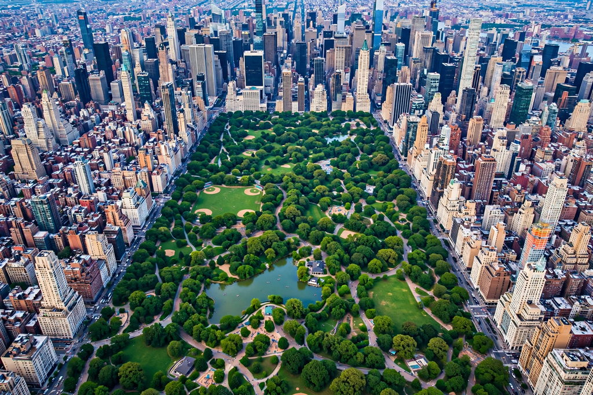

| Central Park | |
|---|---|
 | |
| Location | Manhattan, New York City, United States |
| Coordinates | 40.7825° N, 73.9661° W |
| Area | 843 acres (341 ha; 1.317 sq mi) |
| Created | 1858 (opened); completed 1876 |
| Designer | Frederick Law Olmsted and Calvert Vaux (Greensward Plan) |
| Operated by | Central Park Conservancy, under contract with NYC Parks |
| Visitors | About 42 million annually |
| Status | National Historic Landmark; New York City scenic landmark |
Central Park is an urban park in New York City, between the Upper West and Upper East Sides of Manhattan. It is the fifth-largest park in the city by area, covering 843 acres (341 ha). It is the most visited urban park in the United States, with an estimated 42 million visitors annually, and is among the most filmed locations in the world.
The park stretches 2.5 miles (4.0 km) from 59th Street (Central Park South) to 110th Street (Central Park North) and is 0.5 miles (0.8 km) wide between Fifth Avenue and Central Park West. Despite appearances, it is almost entirely landscaped: its features — meadows, woodlands, lakes and ponds, and winding paths — were constructed on a rocky, swampy site. Notable landmarks include the Reservoir (now named for Jacqueline Kennedy Onassis), the Ramble and Lake, Sheep Meadow, Wollman Rink, Central Park Zoo, the Metropolitan Museum of Art, Belvedere Castle, Bethesda Terrace and Fountain, the Mall and Literary Walk, and Strawberry Fields, a memorial to John Lennon. Transverse roads carry crosstown traffic in sunken roadways screened by planting.
As New York expanded in the 19th century, civic leaders and landscape writers such as William Cullen Bryant and Andrew Jackson Downing advocated a great public park. The state authorized land acquisition in 1853, displacing some 1,600 residents, including the predominantly African American community of Seneca Village. In 1858, Frederick Law Olmsted and Calvert Vaux won the design competition with their naturalistic "Greensward Plan". Construction employed up to 20,000 workers, moved millions of cubic yards of earth, and planted hundreds of thousands of trees and shrubs; the park opened in stages from 1858 and was completed in 1876.
Through the mid-20th century the park suffered underfunding, erosion, and vandalism, and by the 1970s it symbolized the city's fiscal crisis. The private Central Park Conservancy, founded in 1980, raised hundreds of millions of dollars and, in partnership with the city, restored landscapes and structures zone by zone — a model studied by parks worldwide. The restoration is widely credited with transforming the park's safety, ecology, and public use.
Central Park hosts concerts (including free summer performances on the Great Lawn), Shakespeare in the Park at the Delacourte Theater, horse-drawn carriage rides, boating on the Lake, ice skating, model-boat sailing at Conservatory Water, and numerous athletic facilities. The park's drives form a 6.1-mile (9.8 km) loop popular with runners and cyclists, and the New York City Marathon finishes in the park. It is completely closed to private automobiles on its internal drives, a policy completed in 2018.
The park supports several hundred bird species along the Atlantic Flyway and is a celebrated birdwatching site during spring and fall migration. Its restored woodlands, meadows, and water bodies support diverse plantings and wildlife unusual for a dense urban core.
This article is a recreation from memory in the style of Wikipedia.